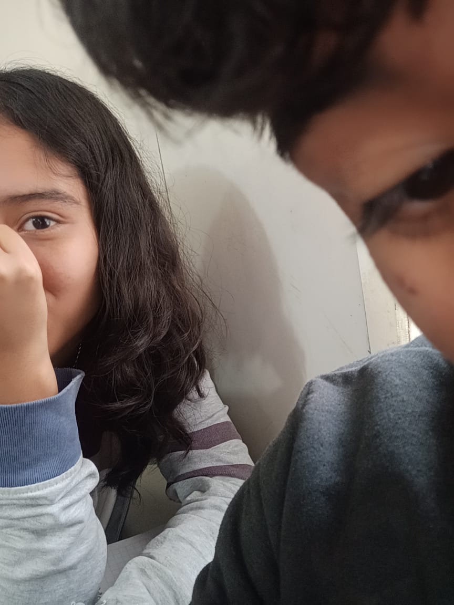

Estrella,
Desde que llegaste a mi vida, algo en mí cambió sin que me diera cuenta. Fue como una luz que se encendió en un cuarto oscuro. Así llegaste tú… iluminando partes de mí que ni yo conocía.
A veces me pregunto cómo alguien puede significar tanto. Cómo una persona puede volverse calma, refugio y al mismo tiempo emoción.
Si pudiera escribir todo lo que siento por ti, no me alcanzarían las estrellas. Porque lo que me haces sentir no se explica, se siente en el corazón.
Me gusta pensar en ti, en tu risa, en tu forma de ser, en todo lo que te hace única.

No te prometo un amor perfecto, pero sí uno real, que se quede incluso cuando haya miedo. Uno que te elija todos los días.
Quiero una historia contigo… y ahora solo me queda preguntarte algo desde lo más profundo de mi corazón.